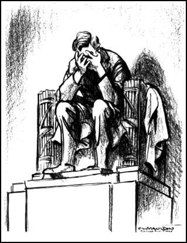
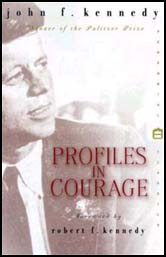

John
Fitzgerald Kennedy,
the son of Joseph Patrick Kennedy and
Rose Fitzgerald, was born in Brookline,
Massachusetts, on 29th May, 1917. His great grandfather, Patrick
Kennedy, had emigrated from Ireland
in 1849 and his grandfathers, Patrick Joseph
Kennedy and John Francis Fitzgerald,
were important political figures in Boston.
Kennedy's father was a highly successful businessman who later served
as ambassador to Great Britain (1937-40).
In 1940 Kennedy graduated from Harvard
University with a science degree. The same year saw the
publication of
Why
England Slept
(1940), a book on foreign policy. He joined the United
States Navy in 1941 and became an intelligence officer. After
the United States entered the Second World War,
Kennedy was transferred to the Motor Torpedo Boat Squadron where he
was given command of a PT boat.
Sent to the South Pacific, in August 1943, his boat was hit by a Japanese
destroyer. Two of his crew were killed but the other six men managed
to cling on to what remained of the boat. After a five hour struggle
Kennedy, and what was left of his crew, managed to get to an island
five miles from where the original incident took place.
Kennedy suffered a bad back injury and in December 1943 was sent back
to the United States. When he recovered he was promoted to the rank
of lieutenant and became a PT instructor in Florida. After a further
operation on his back he returned to civilian life in March 1945.
For the next twelve months he worked as a journalist covering the
United Nations Conference in San Francisco
and the 1945 General Election in Britain.
A member of the Democratic Party,
Kennedy won election to the House of Representatives in 1946. Over
the next couple of years he established himself as a loyal supporter
of Harry S. Truman. In Congress he advocated
progressive taxation, the extension of social welfare and more low-cost
public housing. He was also a leading opponent of the Taft-Hartley
Bill.
Kennedy took a strong interest in foreign policy and in 1951 toured
Europe visiting Britain, France, Italy, Spain, Yugoslavia and West
Germany. On his return he told the Senate Committee on Foreign Relations
that the United States should maintain its policy of helping to defend
Western Europe. However, he argued that the countries concerned should
contribute more to the costs of the operation.
In the autumn of 1951 Kennedy visited the Middle East, India, Pakistan,
Indochina, Malaya and Korea. An opponent of colonial empires, Kennedy
urged that France should leave Algeria. He also argued for increased
financial aid to underdeveloped countries.
Kennedy was elected to the Senate in 1952. The following year
he married Jacqueline
Bouvier, the daughter of a New York City financier. Over the next
few years four children were born
but only two, Caroline and John, survived infancy. Kennedy continued
to suffer from back problems and had two operations in October 1954
and February 1955. While recovering in hospital he wrote the Pulitzer
Prize winning Profiles
in Courage
(1956).
Kennedy was a strong advocate of social welfare and civil rights legislation
in the Senate. Kennedy also sponsored bills for providing Federal
financial aid to education, liberalizing United States immigration
laws and a measure that required full disclosure of all employee pension
and welfare funds.
In 1960 Kennedy entered the race to become the Democratic
Party presidential candidate. Kennedy won Democratic primaries
in New Hampshire, Wisconsin, Indiana, Ohio, Oregon, Maryland, Nebraska
and West Virginia. At the national convention in July 1960, Kennedy
was nominated on the first ballot. He selected Lyndon
B. Johnson, as his running mate.
Kennedy's candidacy was controversial because no Roman
Catholic had ever been elected president. It was generally believed
that this had played an important factor in the defeat of Al
Smith in 1928. Kennedy decided to tackle this issue head on and
in a speech in Houston on 11th September, 1960, Kennedy attacked religious
bigotry and he explained how he believed in the absolute separation
of church and state.
If elected, Kennedy, at 43, would be the second youngest president
in United States history (Theodore Roosevelt
was only 42 when he replaced the assassinated William
McKinley in 1901). In contrast, Richard
Nixon, the Republican Party
candidate, had served for eight years as vice president under Dwight
Eisenhower. During the campaign Nixon highlighted his opponent's
lack of experience but when the votes were counted, Kennedy won by
34,226,925 votes to 34,108,662.
At his inaugural address
on 20th January, 1961, Kennedy challenged the people of the United
States with the statement: "Ask not what your country can do
for you, but rather what you can do for your country." Kennedy
also wanted the young people of the country to help the undeveloped
world. He announced the establishment of the Peace
Corps,
a scheme that intended to send 10,000 young people to serve in Africa,
Asia and Latin America. Kennedy argued that this "practical,
inexpensive, person-to-person program will plant trust, good will
and a capacity for self-help" in the underdeveloped world.
In the first speech he
made to the American public as their President, Kennedy made it clear
that he intended to continue Eisenhower's policy of supporting the
South Vietnamese government of Ngo
Dinh Diem.
He argued that if South Vietnam became a communist state, the whole
of the non-communist world would be at risk. If South Vietnam fell,
Laos, Cambodia, Burma, Philippines, New Zealand and Australia would
follow. If communism was not halted in Vietnam it would gradually
spread throughout the world. This view became known as the Domino
Theory. Kennedy
went on to argue: "No other challenge is more deserving of our
effort and energy... Our security may be lost piece by piece, country
by country." Under his leadership, America would be willing to:
"pay any price, bear any burden, meet any hardship, support any
friend, oppose any foe to assure the survival and success of liberty."
Kennedy's speech had a
considerable impact on many young Americans. Philip Caputo was one
of those who traced back his decision to join the US Marines to Kennedy's
inauguration speech: "War is always attractive to young men who
know nothing about it, but we had also been seduced into uniform by
Kennedy's challenge to "ask what you can do for your country"
and by the missionary idealism he had awakened in us... we believed
we were ordained to play cop to the Communists' robber and spread
our own political faith around the world."
When Kennedy
replaced Dwight
Eisenhower as
president of the United States he was told about
the CIA plan to invade Cuba.
Kennedy had doubts about the venture but he was afraid he would be
seen as soft on communism if he refused permission for it to go ahead.
Kennedy's advisers convinced him that Fidel
Castro was an
unpopular leader and that once the invasion started the Cuban people
would support the ClA-trained forces.
On April 14, 1961, B-26
planes began bombing Cuba's airfields. After the raids Cuba was left
with only eight planes
and seven pilots. Two days later five merchant ships carrying 1,400
Cuban exiles arrived at the Bay
of Pigs. The attack was a total failure. Two of the ships
were sunk, including the ship that was carrying most of the supplies.
Two of the planes that were attempting to give air-cover were also
shot down. Within seventy-two hours all the invading troops had been
killed, wounded or had surrendered.
At the beginning of September
1962, U-2 spy planes discovered that the Soviet
Union was building surface-to-air missile (SAM) launch sites.
There was also an increase in the number of Soviet ships arriving
in Cuba which the United States government
feared were carrying new supplies of weapons. President Kennedy complained
to the Soviet Union about these developments and warned them that
the United States would not accept offensive weapons (SAMs were considered
to be defensive) in Cuba.
As the Cubans now had
SAM installations they were in a position to shoot down U-2 spy-planes.
Kennedy was in a difficult situation. Elections were to take place
for the United States Congress in two month's time. The public opinion
polls showed that his own ratings had fallen to their lowest point
since he became president.
In his first two years
of office a combination of Republicans and conservative southern Democrats
in Congress had blocked much of Kennedy's proposed legislation. The
polls suggested that after the elections he would have even less support
in Congress. Kennedy feared that any trouble over Cuba would lose
the Democratic
Party even more votes,
as it would remind voters
of the Bay
of Pigs disaster where the CIA
had tried to oust Castro
from power. One poll showed
that over 62 per cent of the population were unhappy with his policies
on Cuba. Understandably, the Republicans
attempted to make Cuba the main issue in the campaign.
This was probably in Kennedy's
mind when he decided to restrict the flights of the U-2 planes over
Cuba . Pilots were also told to avoid flying
the whole length of the island. Kennedy hoped this would ensure that
a U-2 plane would not be shot down, and would prevent Cuba becoming
a major issue during the election campaign.
On September 27, a CIA
agent in Cuba overheard Castro's personal pilot tell another man in
a bar that Cuba now had nuclear weapons. U-2 spy-plane photographs
also showed that unusual activity was taking place at San Cristobal.
However, it was not until October 15 that photographs were taken that
revealed that the Soviet Union was placing
long range missiles in Cuba.
President Kennedy's first
reaction to the information about the missiles
in Cuba was to call a meeting to discuss what should be
done. Fourteen men attended the meeting and included military
leaders, experts on Latin America, representatives of the
CIA, cabinet ministers and personal friends whose advice Kennedy
valued. This group became known as the Executive Committee
of the National Security Council. Over the next few days
they were to meet several times.
At the first meeting of
the Executive Committee of the National Security Council, the CIA
and other military advisers explained the situation. After hearing
what they had to say, the general feeling of the meeting was for an
air-attack on the missile sites. Remembering the poor advice the CIA
had provided before the Bay
of Pigs invasion, Kennedy
decided to wait and instead called for another meeting to take
place that evening. By this time several of the men were having doubts
about the wisdom of a bombing raid, fearing that it would lead to
a nuclear war with the Soviet Union. The committee was now so divided
that a firm decision could not be made.
The Executive Committee
of the National Security Council argued amongst themselves for the
next two days. The CIA and the military were still in favour of a
bombing raid and/or an invasion. However, the majority of the committee
gradually began to favour a naval blockade of Cuba.
Kennedy accepted their
decision and instructed Theodore Sorensen, a member of the committee,
to write a speech in which Kennedy would explain to the world why
it was necessary to impose a naval blockade of Cuba.
As well as imposing a naval
blockade, Kennedy also told the air-force to prepare for attacks on
Cuba and the Soviet Union. The army positioned 125,000 men in Florida
and was told to wait for orders to invade Cuba. If the Soviet ships
carrying weapons for Cuba did not turn back or refused to be searched,
a war was likely to begin. Kennedy also promised his military advisers
that if one of the U-2 spy planes were fired upon he would give orders
for an attack on the Cuban SAM missile sites.
The world waited anxiously.
A public opinion poll in the United States revealed that three out
of five people expected fighting to break out between the two sides.
There were angry demonstrations outside the American Embassy in London
as people protested about the possibility of nuclear war. Demonstrations
also took place in other cities in Europe. However, in the United
States, polls suggested that the vast majority supported Kennedy's
action.
On October 24, President
Kennedy
was informed that
Soviet ships had stopped just before they reached the United States
ships blockading Cuba. That evening Nikita
Khrushchev sent an angry note to Kennedy accusing him of
creating a crisis to help the Democratic Party win the forthcoming
election.
On October 26, Khrushchev
sent Kennedy another letter. In this he proposed that the Soviet Union
would be willing to
remove the missiles in Cuba in exchange for a promise by the United
States that they would not invade Cuba. The next day a second letter
from Khrushchev arrived demanding that the United States remove their
nuclear bases in Turkey.
While the president and
his advisers were analyzing Khrushchev's two letters, news came through
that a U-2 plane had been shot down over Cuba. The leaders of the
military, reminding Kennedy of the promise he had made, argued that
he should now give orders for the bombing of Cuba. Kennedy refused
and instead sent a letter to Khrushchev accepting the terms of his
first letter.
Khrushchev agreed and gave
orders for the missiles to be dismantled. Eight days later the elections
for Congress took place. The Democrats increased their majority and
it was estimated that Kennedy would now have an extra twelve supporters
in Congress for his policies.
The Cuban
Missile Crisis was the first and only nuclear confrontation
between the United States and the Soviet
Union. The event appeared to frighten both sides and it marked
a change in the development of the Cold War.
During this period Kennedy
made it clear that he intended to continue the policy of supporting
the South Vietnam's government. He argued that if South Vietnam became
a communist state, the whole of the non-communist world would be at
risk. He went on to claim that: "No other challenge is more deserving
of our effort and energy. Our security may be lost piece by piece,
country by country." Kennedy added that under his leadership,
the United States would be willing to "pay any price, bear any
burden, meet any hardship, support any friend, oppose any foe to assure
the survival and success of liberty".
President Charles
De Gaulle of
France, warned him that if he was not careful, Vietnam would trap
the United States in "a bottomless military and political swamp."
However, most of his advisers argued that with a fairly small increase
in military aid, the United States could prevent a NLF victory in
South Vietnam.
Kennedy
had a good relationship with Ngo
Dinh Diem,
the leader of the South Vietnamese government and in 1961 he arranged
for him to receive the money necessary to increase his army from 150,000
to 170,000. He also agreed to send another 100 military advisers to
Vietnam to help train the South Vietnamese
Army. As this decision broke the terms of the Geneva Agreement, it
was kept from the American public.
In 1962 the Strategic
Hamlet Programme was
introduced. For sometime the governments of South Vietnam and the
United States had been concerned about the influence of the National
Liberation Front (NLF)
on the peasants. In an attempt to prevent this they moved the peasants
into new villages in areas
under the control of the South Vietnamese Army. A stockade was built
around the village and these were then patrolled by armed guards.
This strategy failed dismally and some observers claimed that it actually
increased the number of peasants joining the NLF. As one pointed out:
"Peasants resented working without pay to dig moats, implant
bamboo stakes, and erect fences against an enemy that did not threaten
them but directed its sights against government officials." In
the majority of cases the peasants did not want to move and so the
South Vietnamese Army often had to apply force. This increased the
hostility of the peasants towards Ngo Dinh Diem's government.
In the majority of cases
the peasants did not want to move and so the South Vietnamese army
often had to apply force. This increased the hostility of the peasants
towards the Ngo
Dinh Diem government.
The peasants were
angry at having to travel longer distances to reach their rice fields.
Others were upset for religious reasons for they believed that it
was vitally important to live where their ancestors
were buried.
Kennedy became worried
when he was informed that despite the Strategic Hamlet programme,
the membership of the National Liberation Front
had grown to over 17,000 - a 300 per cent increase in two years -
and that they now controlled over one-fifth of the villages in South
Vietnam.
These details were used
to pressurise Kennedy into supplying more military advisers. This
he agreed to do and by the end of 1962 there were 12,000 in Vietnam.
Kennedy also made the decision to supply South Vietnam with 300 helicopters.
Their American pilots were told not to become "engaged in combat"
but this became an order that was difficult to obey. Although Kennedy
denied it at the time, American soldiers were becoming increasingly
involved in the fighting in Vietnam.
Kennedy
had little success in persuading Congress to accept his plans for
Medicare. Kennedy's proposals would
have provided health coverage for persons over 65 years of age. The
insurance was to be financed by increases in the social security payroll
tax. Medicare would also offer basic hospital care for 60 days as
well as the payment of doctor's fees.
Medicare was popular with the Trade
Union movement but was vigorously opposed by private insurance
companies. The American Medical Association were also against it,
describing the measure as an example of socialism
and Kennedy was unable to persuade Congress to pass the bill.
In the 1960 presidential election campaign John
F. Kennedy argued for a new Civil Rights
Act. After the election it was discovered that over 70 per cent
of the African American vote went to Kennedy. During the first two
years of his presidency, Kennedy failed to put forward his promised
legislation. However, in 1961 he sent 600 Federal marshals to Alabama
to protect the Freedom Riders. They
were also used to protect the rights of African American students
at Mississippi University.
Kennedy's civil rights bill was eventually brought before Congress
in 1963 and in a speech on television on 11th June, Kennedy pointed
out that: "The Negro baby born in America today, regardless of
the section of the nation in which he is born, has about one-half
as much chance of completing high school as a white baby born in the
same place on the same day; one third as much chance of completing
college; one third as much chance of becoming a professional man;
twice as much chance of becoming unemployed; about one-seventh as
much chance of earning $10,000 a year; a life expectancy which is
seven years shorter; and the prospects of earning only half as much."
On 11th June, 1963, Thich
Quang Due, a sixty-six year old monk in Vietnam,
sat down in the middle of a busy Saigon road. He was then surrounded
by a group of Buddhist monks and nuns
who poured petrol over his head and then set fire to him. One eyewitness
later commented: "As he burned he never moved a muscle, never
uttered a sound, his outward composure in sharp contrast to the wailing
people around him." While Thich Quang Due was burning to death,
the monks and nuns gave out leaflets calling for Diem's government
to show "charity and compassion " to all religions.
The government's response
to this suicide was to arrest thousands of Buddhist monks. Many disappeared
and were never seen again. By August another five monks had committed
suicide by setting fire to themselves. One member of the South Vietnamese
government responded to these self-immolations by telling a newspaper
reporter: "Let them burn, and we shall clap our hands."
Another offered to supply Buddhists who wanted to commit suicide with
the necessary petrol.
These events convinced
Kennedy that Ngo
Dinh Diem would
never be able to unite the South Vietnamese against communism. Several
attempts had already been made to overthrow Diem but Kennedy had always
instructed the CIA and the US military forces
in Vietnam to protect him. In order to obtain a more popular leader
of South Vietnam, Kennedy agreed that the role of the CIA should change.
Lucien Conein, a CIA operative, provided a group of South Vietnamese
generals with $40,000 to carry out the coup with the promise that
US forces would make no attempt to protect Diem. At
the beginning of November, 1963, President Diem was overthrown by
a military coup. After the generals had promised Diem that he would
be allowed to leave the country they changed their
mind and killed him.
Kennedy now had serious
doubts about his Vietnam policy. He told
Kenneth
O'Donnell
and Mike
Mansfield that he intended to get out of Vietnam. Robert
S. McNamara,
the Secretary of Defense, also thought that Kennedy would withdraw
once he was re-elected.
On
22nd November, 1963, President John F. Kennedy
arrived in Dallas. It was decided that Kennedy and his party, including
his wife, Jacqueline Kennedy, Vice President
Lyndon B. Johnson, Governor John
Connally and Senator Ralph Yarborough,
would travel in a procession of cars through the business district
of Dallas. A pilot car and several motorcycles rode ahead of the presidential
limousine. As well as Kennedy the limousine included his wife, John
Connally, his wife Nellie, Roy Kellerman, head of the Secret Service
at the White House and the driver, William Greer. The next car carried
eight Secret Service Agents. This was followed by a car containing
Lyndon Johnson and Ralph Yarborough.
At
about 12.30 p.m. the presidential limousine entered Elm Street. Soon
afterwards shots rang out. John Kennedy was hit by bullets that hit
him in the head and the left shoulder. Another bullet hit John Connally
in the back. Ten seconds after the first shots had been fired the
president's car accelerated off at high speed towards Parkland Memorial
Hospital. Both men were carried into separate emergency rooms. Connally
had wounds to his back, chest, wrist and thigh. Kennedy's injuries
were far more serious. He had a massive wound to the head and at 1
p.m. he was declared dead.
Within
two hours of the killing, a suspect, Lee
Harvey Oswald, was arrested. Throughout the the time Oswald was
in custody, he stuck to his story that he had not been involved in
the assassination. On 24th November, while being transported by the
Dallas police from the city to the county jail, Oswald was shot dead
by Jack Ruby.

Bill
Mauldin, Chicago Sun-Times
(23rd November, 1963)
Open
Debate on the Kennedy Assassination
(1)
John Hersey wrote about the heroism of
John
F. Kennedy after interviewing members
of the crew of the American Motor Torpedo Boat that sank in the Blackett
Straight. The article appeared in the New Yorker on 17th June
1944.
All morning they watched for the plane which they thought would be
looking for them. They cursed war in general and PTs in particular.
At about ten o'clock the hulk heaved a moist sigh and turned turtle.
McMahon and Johnston had to hang on as best they could. It was clear
that the remains of the 109 would soon sink. When the sun had passed
the meridian, Kennedy said, "We will swim to that small island,"
pointing to one of a group three miles to the southeast. "We
have less chance of making it than some of these other islands here,
but there'll be less chance of Japs, too." Those
who could not swim well grouped themselves around a long two-by-six
timber with which carpenters had braced the 37-millimetre cannon on
deck and which had been knocked overboard by the force of the collision.
They tied several pairs of shoes to the timber, as well as the ship's
lantern, wrapped in a life jacket to keep it afloat. Thorn took charge
of this unwieldy group. Kennedy took McMahon in tow again. He cut
loose one end of a long strap on McMahon's Mae West and took the end
in his teeth. He swam breast stroke, pulling the helpless McMahon
along on his back. It took over five hours to reach the island. Water
lapped into Kennedy's mouth through his clenched teeth, and he swallowed
a lot. The salt water cut into McMahon's awful burns, but he did not
complain. Every few minutes, when Kennedy stopped to rest,
taking the strap out of his mouth and holding it in his hand, McMahon
would simply say, "How far do we have to go?"
Kennedy would reply, "We're
going good." Then he would ask, "How do you feel, Mac?"
McMahon always answered,
"I'm OK, Mr Kennedy. How about you?"
In spite of his burden,
Kennedy beat the other men to the reef that surrounded the island.
He left McMahon on the reef and told him to keep low, so as not to
be spotted by Japs. Kennedy went ahead and explored the island. It
was only a hundred yards in diameter; coconuts on the trees but none
on the ground, no visible Japs. Just as the others reached the island,
one of them spotted a Japanese barge chugging along close to shore.
They all lay low. The barge went on.
(2)
In
his autobiography Nikita Khrushchev describes his first meeting with
John
F. Kennedy after
he had beaten Richard
Nixon to
became president of the United States.
I was impressed
with Kennedy. I remember liking his face, which was sometimes stern
but which often broke into a good-natured smile. As for Nixon... he
was an unprincipled puppet, which is the most dangerous kind. I was
very glad Kennedy won the election... I joked with him that we had
cast the deciding ballot in his election to the Presidency over that
son-of-a-bitch Richard Nixon. When he asked me what I meant, I explained
that by waiting to release the U-2 pilot Gary Powers until after the
American election, we kept Nixon from being able to claim that he
could deal with the Russians; our ploy made a difference of at least
half a million votes, which gave Kennedy the edge he needed.
(3)
James Reston, a journalist on the New
York Times newspaper, travelled to Vienna with President Kennedy
when he met Khrushchev for the first time He commented on this meeting
three years later in an article for his newspaper.
Khrushchev
had studied the events of the Bay of Pigs; he would have understood
if Kennedy had left Castro alone or destroyed him but when Kennedy
was rash enough to strike at Cuba but not bold enough to finish the
job, Khrushchev decided he was dealing with an inexperienced young
leader who could be intimidated and blackmailed.
(4)
Theodore Sorensen was a friend and speechwriter for John
F. Kennedy. He was with Kennedy in
Vienna and later wrote about the meeting between these two men.
Neither
Kennedy nor Khrushchev emerged victorious or defeated cheerful or
shaken. Each had probed the other for weakness and found none. Khrushchev
had not been swayed by Kennedy's reason and charm. Kennedy had not
been panicked by Khrushchev's tough talk.
(5)
Elie Abel's book, The Missiles of October: The Story of the Cuban
Missile Crisis, was published In 1966. In the book Abel comments
on John Kennedy's meeting with Khrushchev in Vienna.
There is
reason to believe that Khrushchev took Kennedy's measure at their
Vienna meeting in June 1961, and decided this was a young man who
would shrink from hard decisions... There is no evidence to support
the belief that Khrushchev ever questioned America's power. He questioned
only the President's readiness to use it. As he once told Robert Frost,
he came to believe that Americans are "too liberal to fight.'
(6)
Jack
Anderson, speech
at the University of Utah (22nd September, 1999)
John F. Kennedy called the best brains he could assemble. He gathered
them from as far away as Moscow. Every embassador that served in Moscow
that was still alive was present. The brightest people that understood
the Soviet Union were present. They met every day for three weeks.
They became so cozy that President Kennedy began calling them his
crisis club. His crisis club. And they warned. They said, "Mr.
President, don't back Khrushchev in to a corner. He is an impulsive
man. He is an impulsive man. You remember when he took a shoe off
at the United Nations and banged on a desk. He might very well push
a button that will send missiles toward the United States. Don't back
him in to a corner. Give him room to maneuver." That was their
advice.
John F. Kennedy did not
take it. He decided, he went before the crisis club after about three
weeks and he said, "Gentlemen, I have decided on a boycott. We
are going to have to stop any more missiles from going in to Cuba,
and we are going to call upon the Soviet Union to withdraw the missiles
that they have already planted there." One in the crisis club
said, "Mr. President, what you are describing is an act of war.
Are you prepared to wage war with the Soviet Union?" The president
said, "We'll make it as easy as we can on the Soviets. We'll
offer to take our missiles back from Turkey and Greece. They are worn,
useless missiles that we were going to take back anyway, but on the
world's stage, it may give them, save them some loss of faith. So
we will offer to take back our missiles from Turkey and Greece, but
we will insist that they remove their missiles from Cuba, and if they
don't, we will have to stop them."
One of the members of this
group said, "Mr. President, what if they don't stop? What if
the Soviets turn you down, and continue sending missiles to Cuba,
and you order them to stop, and what if they don't stop?" The
president said, "We will follow the procedures of the sea. We
will fire a warning shot across the bow, and if they don't stop then,
we will attack." One of the members said, "Mr. President,
what if the situation were reversed? What if the Soviets tried to
stop our ships on the high seas and maybe even fired a warning shot.
What would you do?" Jack Kennedy thought that over a bit. "Well,"
he said, "it would depend on the circumstances, of course, but
most likely I would have to take military action." And this man
said, "And what makes you think the Soviets won't do the same?"
Now there were a lot of Monday morning statesman afterward that said
they knew that the Soviets would back down. I am here to report to
you, because I had sources in that meeting, in those meetings. They
told me exactly what was said. President Kennedy said, "I don'
t know what the Soviets will do."
(7)
Herbert Parmet,
Presidency of John F. Kennedy (1983)
Kennedy
recognised the barbaric aspects of racial injustice, but it was an
appreciation that remained as removed from personal experience as
the poverty that Kennedy had confronted while campaigning in West
Virginia. The desperation itself was not felt, and the moral fervor
of a Martin Luther King, left him cold. Asked on January 15, 1962
about his campaign promise on civil rights, Kennedy explained that
"we are proceeding ahead in a way which will maintain a consensus
and will advance this cause."
(8)
John F. Kennedy, speech on Congress (28th February, 1963)
One
hundred years ago the Emancipation Proclamation was signed by a President
who believed in the equal worth and opportunity of every human being.
That proclamation was only the first step. Through these long 100
years, while slavery has vanished, progress for the Negro has been
too often blocked and delayed. Equality before the law has not always
meant equal treatment and opportunity. And the harmful, wasteful,
and wrongful results of racial discrimination and segregation still
appear in virtually every aspect of national life.
Racial discrimination hampers our economic growth by preventing the
maximum development and utilization of our manpower. It hampers our
world leadership by contradicting at home the message we preach abroad.
It mars the atmosphere of a united and classless society in which
the nation rose to greatness. It increases the costs of public welfare,
crime, delinquency, and disorder. Above all, it is wrong.
(9)
John F. Kennedy, speech on television (11th June, 1963)
This
nation was founded by men of many nations and backgrounds. It was
founded on the principle that all men are created equal; and that
the rights of every man are diminished when the rights of one man
are threatened.
It ought
to be possible, therefore, for American students of any color to attend
any public institution they select without having to be backed up
by troops. It ought to be possible for American consumers of any color
to receive equal service in places of public accommodation, such as
hotels and restaurants, and theaters and retail stores, without being
forced to resort to demonstrations in the street.
And it ought to be possible
for American citizens of any color to register and to vote in a free
election without interference or fear of reprisal.
It ought to be possible,
in short, for every American to enjoy the privileges of being American
without regard to his race or his color.
This is not a sectional
issue. Difficulties over segregation and discrimination exist in every
city, in every state of the Union, producing in many cities a rising
tide of discontent that threatens the public safety.
Nor is this a partisan
issue. In a time of domestic crisis, men of goodwill and generosity
should be able to unite regardless of party or politics.
This is not even a legal
or legislative issue alone. It is better to settle these matters in
the courts than on the streets, and new laws are needed at every level.
But law alone cannot make men see right.
We are confronted primarily
with a moral issue. It is as old as the Scriptures and is as clear
as the American Constitution. The heart of the question is whether
all Americans are to be afforded equal rights and equal opportunities;
whether we are going to treat our fellow Americans as we want to be
treated.
If an American, because
his skin is dark, cannot eat lunch in a restaurant open to the public;
if he cannot send his children to the best public schools available;
if he cannot vote for the public officials who represent him; if,
in short, he cannot enjoy the full and free life which all of us want,
then who among us would be content to have the color of his skin changed
and stand in his place?
Who among us would then
be content with the counsels of patience and delay? One hundred years
of delay have passed since President Lincoln freed the slaves, yet
their heirs, their grandsons, are not fully free. They are not yet
freed from the bonds of injustice; they are not yet freed from social
and economic oppression.
And this nation, for all
its hopes and all its boasts, will not be fully free until all its
citizens are free.
Now the time has come
for this nation to fulfill its promise.
The events in Birmingham
and elsewhere have so increased the cries for equality that no city
or state or legislative body can prudently choose to ignore them.
The fires of frustration
and discord are burning in every city, North and South. Where legal
remedies are not at hand, redress is sought in the streets in demonstrations,
parades and protests, which create tensions and threaten violence
- and threaten lives.
We face, therefore, a
moral crisis as a country and a people. It cannot be met by repressive
police action. It cannot be left to increased demonstrations in the
streets. It cannot be quieted by token moves or talk. It is a time
to act in the Congress, in your state and local legislative body,
and, above all, in all of our daily lives.
I am, therefore, asking
the Congress to enact legislation giving all Americans the right to
be served in facilities which are open to the public - hotels, restaurants
and theaters, retail stores and similar establishments. This seems
to me to be an elementary right.
I'm also asking Congress
to authorize the Federal Government to participate more fully in lawsuits
designed to end segregation in public education. We have succeeded
in persuading many districts to desegregate voluntarily. Dozens have
admitted Negroes without violence.
Other features will also
be requested, including greater protection for the right to vote.
But legislation, I repeat,
cannot solve this problem alone. It must be solved in the homes of
every American in every community across our country.
In this respect, I want
to pay tribute to those citizens, North and South, who've been working
in their communities to make life better for all.
They are acting not out
of a sense of legal duty but out of a sense of human decency. Like
our soldiers and sailors in all parts of the world, they are meeting
freedom's challenge on the firing line, and I salute them for their
honor - their courage.
(10)
Alice Roosevelt Longworth, interviewed
by Michael Teague in 1981.
Someone should do
a study on charm in politics. People like my father, like Franklin,
like Jack Kennedy were very engaging to begin with. When you add to
that the glamor attached just to being in the White House, they become
almost irresistible. The particular charm of the Kennedys was that
they had a good deal of fun and often had their tongues in their cheeks
at the same time. The Nixons didn't.
The Kennedys reminded
me of all those Irish who came over in the 1840s. They seemed to have
a rather special quality. There were all these marvelous-looking kitchen
maids and policemen, who might easily be Sargent Shriver. I'm not
being snobbish. It's just that rare quality which the Irish and no
other nation seem to have. I never had much time for old Joe Kennedy
but I've always thought Rose Kennedy is an extraordinary woman and
it was fun to see her delightful offspring enjoying themselves.
The Kennedys were a fascinating,
incredible outfit. There hasn't been anything like them since the
Bonapartes. I had great fun with them, especially Jack. He loved to
tease and he could be very amusing. He also had a real feeling for
learning. Both he and Bobby were eager to supplement their education
by learning more. They really wanted to know.
(11)
Walter Trohan wrote about the Cuban Missile Crisis in the New
York Tribune in November 1962.
For the first time in twenty
years Americans can carry their head high because the president of
the United States had stood up to the premier of Russia and made him
back down.
(12)
Mario
Lazo, a Cuban lawyer was a supporter of the Batista regime that was
overthrown by Castro. After the Cuban revolution he fled to the United
States. In 1968 he wrote a book called Dagger in the Heart: American
Failures
in Cuba.
The accounts of the crisis
did not make clear that it was a power confrontation, that the power
of the USA was incomparably superior to that of the USSR, and that
the leaders of both nations knew this to be a fact. The United States,
it is worth repeating, could have erased every important Soviet military
installation and population centre in two or three hours while the
strike capability of the USSR was negligible. Although Kennedy held
the trump cards, he granted the Communist Empire a privileged sanctuary
in the Caribbean by means of the "no invasion" pledge.
(13)
George
Brown, In My Way (1970)
Jack Kennedy was one of
the two Presidents of the United States whom it has been my privilege
to know well. I came to love and admire him in the sense that I did
Gaitskell. He was generous, very warm-hearted and a great humanitarian.
As I came to know him better, I got to feel less and less that he
was a doer. A thinker, a man of imagination, a man of inspiration,
a man of feeling - yes. But even though I be in a minority, here again
I think he was not what I regard as a great doer. I know that in writing
this I shall be reminded of Cuba, where Kennedy seemed to act with
the utmost decisiveness. Yet I have a nagging feeling that Cuba was
in a way a decision made for him. But he charmed Khrushchev as he
charmed me and as he charmed everybody else. All I can say here is
that there has been no politician, Gaitskell apart, in whose presence
I have felt more fascinated, charmed and excited about the possibilities
of power.
(14)
Robert
S. McNamara
interviewed on CNN
in June 1996.
The domino theory... was the primary factor motivating the actions
of both the Kennedy and the Johnson administrations, without any qualification.
It was put forward by President Eisenhower in 1954, very succinctly:
If the West loses control of Vietnam, the security of the West will
be in danger. "The dominoes will fall," in Eisenhower's
words. In a meeting between President Kennedy and President Eisenhower,
on January 19, 1961 - the day before President Kennedy's inauguration
- the only foreign policy issue fully discussed dealt with Southeast
Asia. And there's even today some question as to exactly what Eisenhower
said, but it's very clear that a minimum he said... that if necessary,
to prevent the loss of Laos, and by implication Vietnam, Eisenhower
would be prepared for the U.S. to act unilaterally - to intervene
militarily.
And I think that this was
fully accepted by President Kennedy and by those of us associated
with him. And it was fully accepted by President Johnson when he succeeded
as President. The loss of Vietnam would trigger the loss of Southeast
Asia, and conceivably even the loss of India, and would strengthen
the Chinese and the Soviet position across the world, weakening the
security of Western Europe and weakening the security of North America.
This was the way we viewed it; I'm not arguing (we viewed it) correctly
- don't misunderstand me - but that is the way we viewed it. ...
There were three groups
of individuals among his advisers. One group believed that the situation
(in South Vietnam) was moving so well that we could make a statement
that we'd begin withdrawals and complete them by the end of 1965.
Another group believed that the situation wasn't moving that well,
but that our mission was solely training and logistics; we'd been
there long enough to complete the training, if the South Vietnamese
were capable of absorbing it, and if we hadn't proven successful,
it's because we were incapable of accomplishing that mission and therefore
we were justified in beginning withdrawal. The third group believed
we hadn't reached the point where we were justified in withdrawing,
and we shouldn't withdraw.
Kennedy listened to the
debate, and finally sided with those who believed that either we had
succeeded, or were succeeding, and therefore could begin our withdrawal;
or alternatively we hadn't succeeded, but that ... we'd been there
long enough to test our ability to succeed, and if we weren't succeeding
we should begin the withdrawal because it was impossible to accomplish
that mission. In any event, he made the decision (to begin withdrawing
advisers) that day, and he did announce it. It was highly contested...
Kennedy hadn't said before
he died whether, faced with the loss of Vietnam, he would (completely)
withdraw; but I believe today that had he faced that choice, he would
have withdrawn rather than substitute US combat troops for Vietnamese
forces to save South Vietnam. I think he would have concluded that
US combat troops could not save Vietnam if Vietnam troops couldn't
save it. That was the statement he in effect made publicly before
his death, but at that time he hadn't had to choose between losing
Vietnam, on the one hand, or putting in US combat troops on the other.
Had he faced the decision, I think he would have accepted the loss
of Vietnam and refused to put in US combat troops.
(15)
Kenneth
O'Donnell,
Memories of John Fitzgerald Kennedy (1983)
Kennedy had told (Kenneth O'Donnell) in the spring of 1963
that he could not
pull out of Vietnam until he was reelected, "So we had better
make damned sure I am reelected." ... At a White House reception
on Christmas eve, a month after he succeeded to the presidency, Lyndon
Johnson told the Joint Chiefs: "Just get me elected, and then
you can have your war."
(16)
Leroy
Fletcher Prouty, The
Secret Team (1973)
During those hectic
months of late summer in 1963 when the Kennedy Administration appeared
to be frustrated and disenchanted with the ten-year regime of Ngo
Dinh Diem in Saigon, it approved the plans for the military coup d'état
that would overthrow President Diem and get rid of his brother Nhu.
The Kennedy Administration gave its support to a cabal of Vietnamese
generals who were determined to remove the Ngos from power. Having
gone so far as to withdraw its support of the Diem government and
to all but openly support the coup, the Administration became impatient
with delays and uncertainties from the generals in Saigon, and by
late September dispatched General Maxwell D. Taylor, then Chairman
of Joint Chiefs of Staff (JCS), and Secretary of Defense McNamara
to Saigon.
Upon their return, following
a brief trip, they submitted a report to President Kennedy, which
in proper chronology was the one immediately preceding the remarkable
one of December 21, 1963. This earlier report said, among other things
"There is no solid evidence of the possibility of a successful
coup, although assassination of Diem and Nhu is always a possibility."
The latter part of this sentence contained the substantive information.
A coup d'état, or assassination is never certain from the point
of view of the planners; but whenever United States support of the
government in power is withdrawn and a possible coup d'état
or assassination is not adamantly opposed, it will happen. Only three
days after this report, on October 5, 1963, the White House cabled
Ambassador Lodge in Saigon: "There should be... urgent covert
effort . . . to identify and build contact with possible alternate
leadership." Knowledge of a statement such as this one made by
the ostensible defenders and supporters of the Diem regime was all
those coup planners needed to know. In less than one month Diem was
dead, along with his brother.
Thus, what was considered
to be a first prerequisite for a more favorable climate in Vietnam
was fulfilled. With the Ngo family out of the way, President Kennedy
felt that he had the option to bring the war to a close on his own
terms or to continue pressure with covert activities such as had been
under way for many years. Because the real authors were well aware
of his desires, there was another most important statement in the
McNamara-Taylor report of October 2, 1963: "It should be possible
to withdraw the bulk of U.S. personnel by that time...." (the
end of 1965).
(17)
I.
F. Stone, a journalist, wrote an
article on Kennedy after he was assassinated in 1963.
What if the Russians had
refused to back down and remove their missiles from Cuba? What if
they had called our bluff and war had begun, and escalated? How would
the historians of mankind, if a fragment survived, have regarded the
events of October?... Since this is the kind of bluff that can easily
be played once too often, and that his successors
may feel urged to imitate, it would be well to think it over carefully
before canonizing Kennedy as an apostle of peace.
(18)
Douglas
Horne, JFK
Forum (23rd July, 2004)
In spite of having lead
a rather reckless personal life of apparent sexual excess - something
I do not care about personally one way or the other - JFK's popularity
continues to grow. I think this is for substantial, not insubstantial,
reasons.
It is now apparent, with
the release of many classified documents, the writing of many memoirs,
and the release of many secret office recordings, that JFK was a real
skeptic about the use of military force in combat, and that although
he believed in a very strong military readiness posture for the United
States, and took his Cold War responsibilities extremely seriously,
he repeatedly used military force, or rather was prepared to use it,
only as a last resort, if all other options had been exhausted. For
example:
(1) He refused to bail
out the failed CIA Bay of Pigs invasion of Cuba with U.S. troops,
as the JCS desired him to do;
(2) He ultimately refused
to either bomb or invade Cuba during the Cuban Missile Crisis. He
made all preparations to do so, and made sure the USSR saw these preparations,
and used this impending readiness as a powerful diplomatic tool to
leverage Kruschev, but his daily strategy during this crisis was to
continue to prepare for military action, while daily stalling the
hawks who demanded the use of military force. In doing so he probably
prevented a nuclear war, for we now know that the Russian rocket forces
in Cuba had permission to use tactical nuclear weapons (launched by
FROG missiles) against any US invasion forces, WITHOUT the advance
permission of Moscow. As Robert McNamara said in 1992, if thousands
of US sailors and Marines and Army troops had been "fried"
invading Cuba, it would have demanded a retaliatory response by JFK
and the nuclear war with the USSR would then have probably been unstoppable,
escalating day-by-day into a true Armageddon. Ted Sorenson, who knew
JFK's political instincts better than anyone else, has said that even
though the Cuban invasion was "imminent" at the time Kruschev
capitulated and agreed to remove the missiles, he was confident JFK
would have found ways and means to stall the hawks in the USG and
delay, or forestall, an invasion on a day-by-day basis, even though
it was theoretically approved for Tuesday (I think), 2 days after
Kruschev capitulated.
(3) JFK clearly was intent
on withdrawing form Vietnam in 1965; he was disgusted with the entire
military and political situation in Vietnam, was angry that we had
become enmeshed and entrapped there with so many advisors, and was
determined to right this error after his re-election.
(4) JFK took the Cold War
seriously, but in the right way, and over the right issues. Berlin
was important (because it did involve serious issues of not appeasing
a superpower bully, whose appetite might then only be whetted for
more); Vietnam (which was increasingly apparent to be a local civil
war and not truly a vital superpower issue) was not. JFK wanted to
defeat communism, but NOT on the battlefield...he wanted to defeat
them in the Space Race, the ultimate superpower propaganda contest
in which national greatness and the validity of two competing systems
were going to be measured by technological prowess and economic strength,
not by a destructive war. JFK wanted to promote the positive values
of the West and the USA through volunteer service...through the Peace
Corps.
(5) JFK wanted above all
else to avoid an accidental, unintentional World War in the Nuclear
Age. His own WW II experiences (in which he learned to be very skeptical
about military leadership and so-called expertise), his study of Barbara
Tuchman's book "The Guns of August" about WW I, and the
fresh memory of the Korea stalemate in Asia all made him very cautious
about the use of military force. He wanted to go to war only if we
HAD TO...not because the hawks in the USG wanted to. And if we "had
to" go to war, he wanted to ensure it was over a vital interest
like Soviet aggression in Europe, not over a sideshow in Southeast
Asia where US interest were not directly threatened.
(6) This man chose a life
of public service, when he could, instead, have rolled up in a ball
of self-pity and lived a selfish life of luxury all alone, feeling
sorry for himself because of his serious illness (addison's disease)
and his back pain (which was constant and unremitting). Yet all those
who knew him well said he never uttered a word of self-pity, and had
a genuine optimism about the future of man, about the positive role
[and great responsibility] of the United States in the 20th century,
and genuinely believed in the credo of public service that he so openly
promoted.
(7) JFK became very courageous
on civil rights in 1963, after a couple of years of dithering in 1961
and 1962. He could not duck the issue any longer, and strongly and
firmly came down in favor of equal opportunity in education and proposed
a very bold civil rights bill which LBJ got passed in his memory as
part of the JFK legacy after his assassination.
(8) JFK's Peace Speech
at the American University in June 1963 was a truly remarkable document,
just as the Test Ban Treaty in September of 1963 was a noteworthy
accomplishment. The Test Ban Treaty was his proudest achievement,
and the Peace Speech (which rejected a military PAX AMERICANA and
asked Americans to re-evaluate their altitudes about the Soviet Union)
challenged both Americans and the Soviets to end the Cold War...a
full generation before it finally happened.
In conclusion, regardless
of whether people have advanced degrees or not, or think about politics
frequently or infrequently, they have a pretty good sense of these
things today in America; following the disaster of LBJ's War in Vietnam,
and the current disillusionment over America's Iraq adventure, JFK's
sober caution in foreign affairs looks pretty good to most Americans.
(His one big screw-up was the Bay of Pigs; he openly acknowledged
this, and he learned valuable lessons from it about being cautious
about the so-called expertise of others, and about the limits of military
power.) So does his intelligent, well-informed and reasoned (but not
jingoistic) patriotism, his encouragement of public service, his insatiable
curiosity, his support of the arts in America, and his optimism. So
does his correct and courageous (if a bit belated) stand on civil
rights in America.
America was on the right
road in 1963 when he died. After his death, with the exception of
the Apollo Moon Landing program and other space initiatives which
he began, everything else went downhill fast in the 1960s. Americans
know, and appreciate these facts. It is the mainstream historians
who get it wrong when they say JFK was not a great President; the
man in the street knows better. If he had lived to serve a full 8
years, I think the mainstream historians would treat him more kindly
because they would have more concrete, completed accomplishments to
write about. (Mainstream historians recognize concrete accomplishments
rather than potential, and possibilities, and could-have-beens.) JFK
was great because he had the country going in the right direction,
avoided a nuclear war (and appeasement) through his caution and firm
resolve during the missile crisis, promoted public service and the
arts, and was responsible for the robust space program which may be
the principal accomplishment for which the the post-WW II USA is remembered
500 years from now (as JFK himself predicted).
(19)
Alistair
Cooke, President
Kennedy Assassinated, Manchester
Guardian (23rd November, 1963)
President John Fitzgerald
Kennedy, the 35th President of the United States, was shot during
a motorcade drive through downtown Dallas this afternoon. He died
in the emergency room of the Parkland Memorial Hospital 32 minutes
after the attack. He was 46 years old. He is the third President to
be assassinated in office since Abraham Lincoln and the first since
President McKinley in 1901.
In the late afternoon the
Dallas police took into custody a former Marine, one Lee H. Oswald,
aged 24, who is alleged to have shot a policeman outside a theatre.
He is said to have remarked only, "It is all over now."
He is the chairman of a group called the "Fair Play for Cuba
Committee," and is married to a Russian girl. He is described
at the moment as "a prime suspect."
The new President is the
Vice-President, Lyndon Baines Johnson, a 55-year-old native Texan,
who took the oath of office in Dallas at five minutes to four at the
hands of a woman judge and later arrived in Washington with the body
of the dead President.
This is being written in
the numbed interval between the first shock and the harried attempt
to reconstruct a sequence of fact from an hour of tumult. However,
this is the first assassination of a world figure that took place
in the age of television, and every network and station in the country
took up the plotting of the appalling story. It begins to form a grisly
pattern, contradicted by a grisly preface: the projection on television
screens of a happy crowd and a grinning President only a few seconds
before the gunshots.
The President was almost
at the end of his two-day tour of Texas. He was to make a lunch speech
in the Dallas Trade Mart building and his motor procession had about
another mile to go. He had had the warmest welcome of his trip from
a great crowd at the airport. The cries and pleas for a personal touch
were so engaging that Mrs Kennedy took the lead and walked from the
ramp of the presidential plane to a fence that held the crowd in.
She was followed quickly by the President, and they both seized hands
and forearms and smiled gladly at the people.
The Secret Service and
the police were relieved to get them into their car, where Mrs Kennedy
sat between the President and John B. Connally, the Governor of Texas.
The Dallas police had instituted the most stringent security precautions
in the city's history: they wanted no repetition of the small but
disgraceful brawl that humiliated Adlai Stevenson in their city when
he attended a United Nations rally on October 24.
The motorcade was going
along slowly but smoothly three muffled shots, which the crowd first
mistook for fireworks, cracked through the cheers. One hit the shoulder
blade and the wrist of Governor Connally who was taken with the President
to the hospital, where his condition is serious.
The other brought blood
trickling from the back of the sitting President's head. His right
arm flopped from a high wave of greeting and he collapsed into the
arms of Mrs Kennedy, who fell unharmed. She was heard to cry "Oh,
No" and sat there all the way cradling his head in her lap. As
some people bayed and screamed and others fell to the ground, and
hid their faces, the secret service escort broke into two groups,
one speeding the President's car to the hospital: and another joined
a part of the heavy police escort in wheeling off in pursuit of a
man fleeing across some railroad tracks. Nothing came of this lead.
The President was taken
to the emergency room of the Parkland Hospital and Governor Connally
was taken into the surgery. Mrs Kennedy went in with the living President
and less than an hour later came out with the dead man in a bronze
coffin, which arrived shortly after two priests had administered the
last rites of the Roman Catholic Church.
The body was escorted by
Generals Clifton and McHugh, the President's chief military and air
force aides, to the Dallas Airport and flown thence to Washington.
Within an hour of the President's
death, the Secret Service had found a sniper's nest inside the building
from which the first witnesses swore the bullets had been fired. It
is a warehouse for a school text book firm, known as the Texas School
Depository, on the corner of Elm and Houston Streets.
In an upper room, whose
open window commanded the route of the Presidential motorcade, the
Servicemen found the remains of a fried chicken and a foreign-made
rifle with a telescopic sight. Alongside it lay three empty cartridges.
Mary Ferrell Foundation, Wikipedia: Assassination of John F. Kennedy, History Matters, Assassination Archives and Research Center, Crime Library: Assassination of John F. Kennedy, JFK, JFK Assassination, John McAdams: JFK Assassination, JFK Assassination: The Bush Connection, BBC Assassination of John F. Kennedy, John F. Kennedy, John F. Kennedy Assassination Archives, Martin Shackleford Archive, Warren Commission Report, John McAdams: An Assessment, JFK Lancer, Assassination of John F. Kennedy, John F. Kennedy Assassination: Information, Kennedy Assassination, John F. Kennedy, John F. Kennedy Assassination, John F. Kennedy Presidential Library and Museum, John F. Kennedy Quotes, John Fitzgerald Kennedy, History Place: JFK Assassination, President John F. Kennedy,
House Select Committee on Assassinations, Assassination of John F. Kennedy, History Matters Archive,
Assassination of John F. Kennedy, The Murder of President Kennedy, JFK Assassination Testimony,
Dealey Plaza Revisited, Nook of Eclectic Inquiry, Electronic Assassinations Newsletter, Deep Politics
Real History Archives, JFK: Breaking the News, Unconventional Warrior, Academic JFK Assassination,
The Kennedy Assassination, The Taking of America, Prouty Reference Site, Assassination Science,
Dealey Plaza, JFK Murder Solved, Exhumation of Lee Harvey Oswald, The Men Who Killed Kennedy,
JFK and Cuba, JFK Assassination, Dealey Plaza UK, Fair Play Magazine, Kennedy Assassination, |
Bibliography

Available from Amazon Books
(order below)
{kind=link}